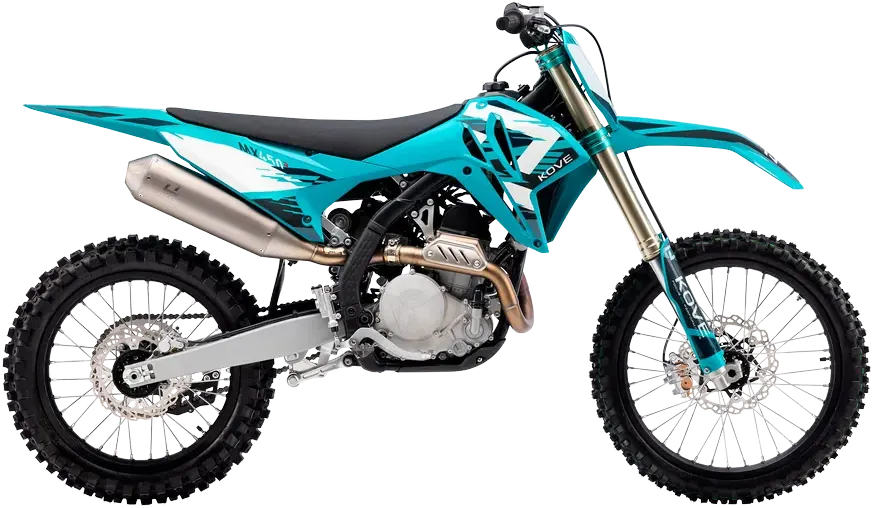
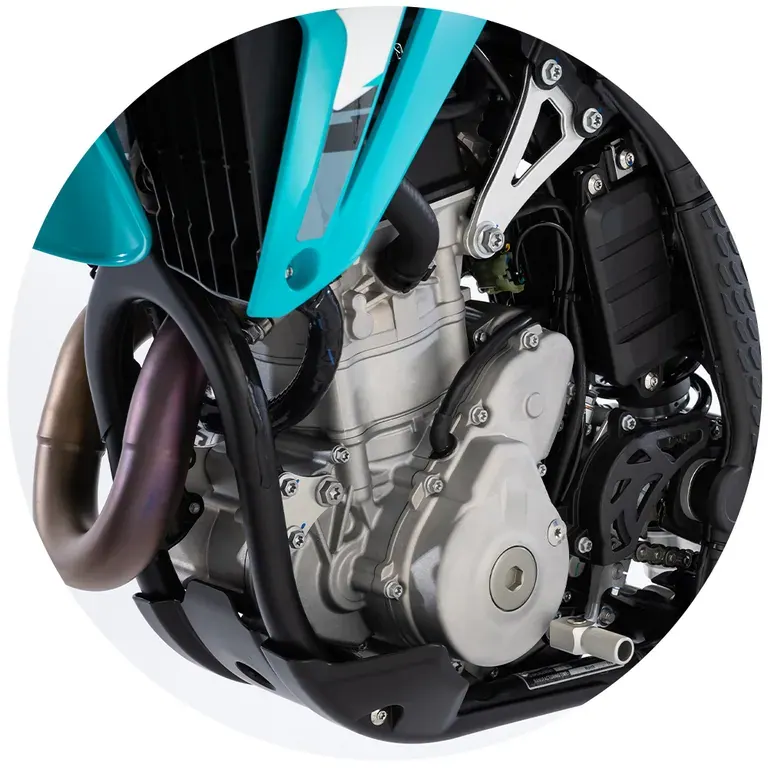
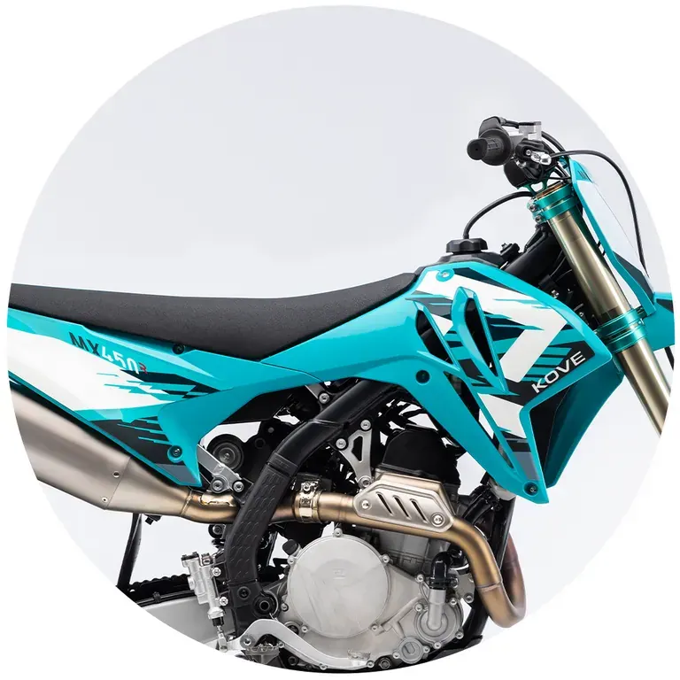
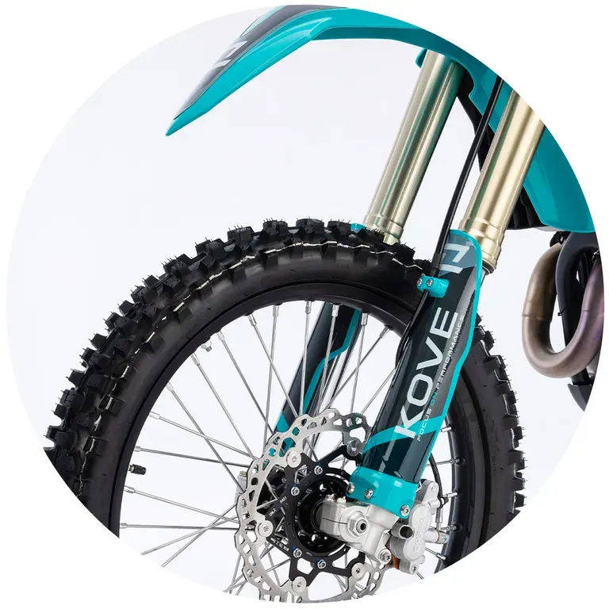
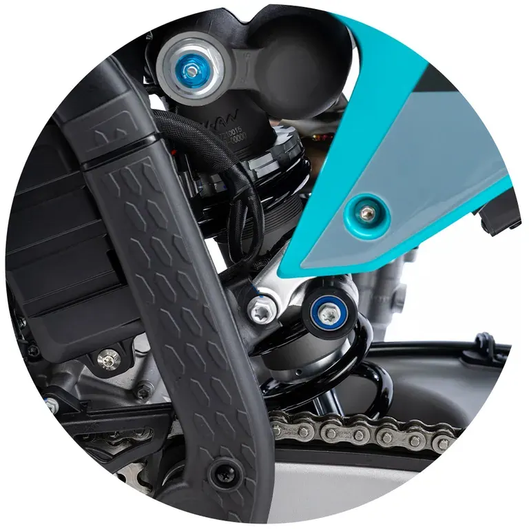

QJ Motor
SRT 800X
A 800 cc · 56 kW · Enduro
Propuesta de OpsPilot para Expomoto Córdoba, en revisión. No es la web oficial: expomotocordoba.es
Inicio › Motos › Kove › MX 450

Kove
El ritmo lo marca la potencia
Precio y financiación: te los damos al momento por teléfono (pendientes de publicar en la web).




Una auténtica 450 de motocross diseñada para imponer ritmo. Potente, estable y con un empuje constante, combina una entrega de par contundente con una parte ciclo pensada para controlar la potencia y mantener la intensidad vuelta tras vuelta.
Equipa un motor monocilíndrico de 449,6 cc , SOHC , 4 válvulas , 4 tiempos y refrigeración líquida , alimentado por inyección electrónica EFI Bosch . El propulsor desarrolla 65 CV a 9.500 rpm y un par máximo de 49 Nm a 7.500 rpm , priorizando una entrega contundente y eficaz desde regímenes medios.
No es una 450 pensada para ir siempre cerca del corte. Es un motor que empuja fuerte desde abajo , permite abrir gas antes y reduce la necesidad de trabajar constantemente con el cambio. Su relación de compresión de 14:1 y su configuración interna están orientadas a mantener la tracción y el rendimiento en situaciones de máxima carga, facilitando un pilotaje más eficiente en mangas largas y circuitos con secciones rápidas y rotas.
Una mecánica diseñada para pilotos que buscan potencia utilizable , capacidad de aceleración inmediata y un comportamiento sólido que permita mantener un ritmo alto con mayor control y menor desgaste físico.
Chasis de doble viga en acero de alta resistencia , combinado con un subchasis de aluminio , desarrollado para ofrecer la rigidez estructural necesaria para gestionar una entrega de potencia más elevada sin comprometer el control. Esta configuración proporciona una base sólida y estable en aceleraciones fuertes, recepciones de salto y secciones rápidas del circuito.
Con un peso en orden de marcha de 102 kg , una distancia entre ejes de 1.490 mm , una altura del asiento de 960 mm y una altura libre al suelo de 340 mm , la geometría de la MX 450 prioriza la estabilidad a alta velocidad y la precisión en trazadas largas, manteniendo una posición de pilotaje centrada y efectiva cuando se rueda con intensidad.
El conjunto está diseñado para permitir aprovechar el mayor par del motor con confianza, reduciendo correcciones innecesarias y facilitando un pilotaje más fluido en circuitos exigentes, especialmente en mangas largas y tramos con alta carga física.
Equipa una horquilla invertida multirregulable , con ajustes independientes de precarga, compresión y extensión , diseñada para trabajar de forma estable bajo mayores esfuerzos. Su recorrido de 303 mm permite absorber impactos fuertes y mantener el control en recepciones de salto y frenadas intensas, incluso cuando se rueda con alto nivel de tracción y potencia.
El amplio rango de regulación facilita adaptar el comportamiento del tren delantero a circuitos rápidos, terrenos rotos y estilos de pilotaje que priorizan la estabilidad y la continuidad del ritmo.